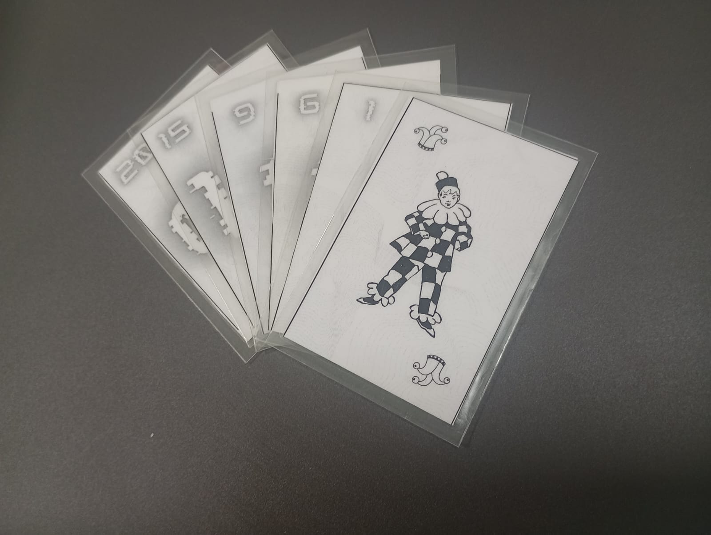

2024
Primeira versão
Desenvolvimento na disciplina de Laboratório de Matemática
A proposta inicial do Carteado da Probabilidade foi desenvolvida em 2024, no contexto da disciplina de Laboratório de Matemática da Universidade Federal de Uberlândia (UFU). Nessa etapa, o jogo surgiu como uma experiência de criação didática para aproximar probabilidade, cartas, dados e tomada de decisão.
